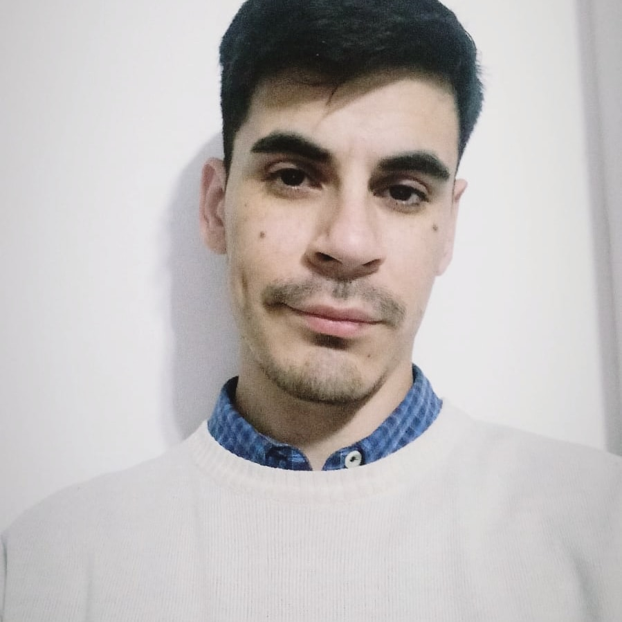

.png) | Tec. Universitario - UTN |
| Tec. Universitario - UTN | Autodidacta, Tecnico universitario en programacion informatica. Actualmente me desempeño como operador de sistemas NOC en T-systems Argentina, me apasiona el desarrolo de software y la seguridad informatica.

Cuento con proyectos de desarrolo de software en C/C++ y C# .NET framework. Proyectos de normalizacion de bases de datos y practicas en T-SQL.

Trabajo en informatica hace mas de cuatro años, pase por las areas de soporte tecnico, mesa de ayuda, testing de software, investigacion de tecnologia, monitoreo y operaciones.
En la carrera desarrollamos solidos conocimeintos sobre programacion estructurada, POO, diagramas de flujo, UML, modelo relacional. Tambien desarrollamos fuertes conocimientos en materias basicas.